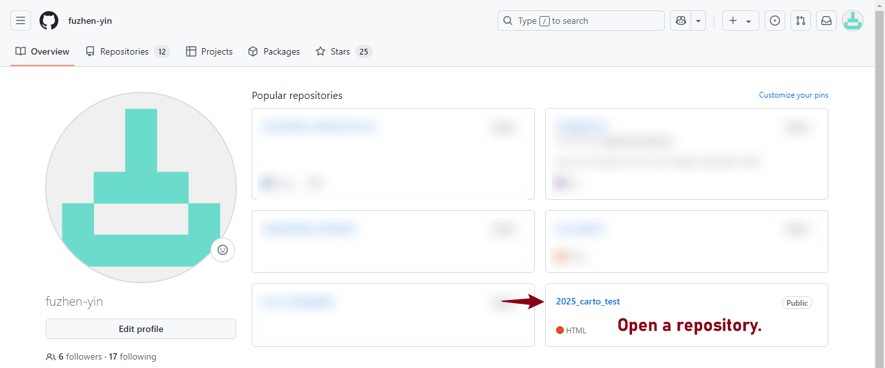
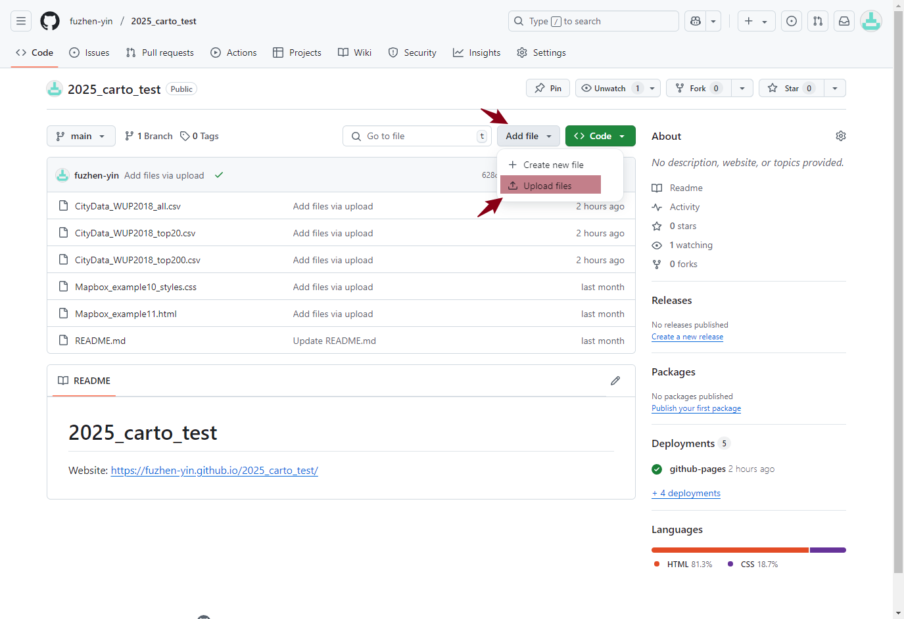
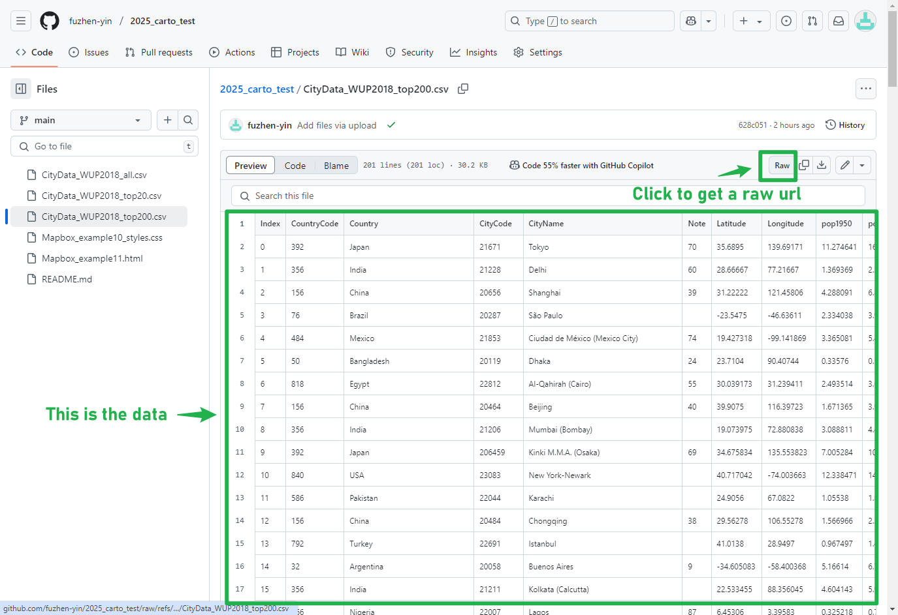
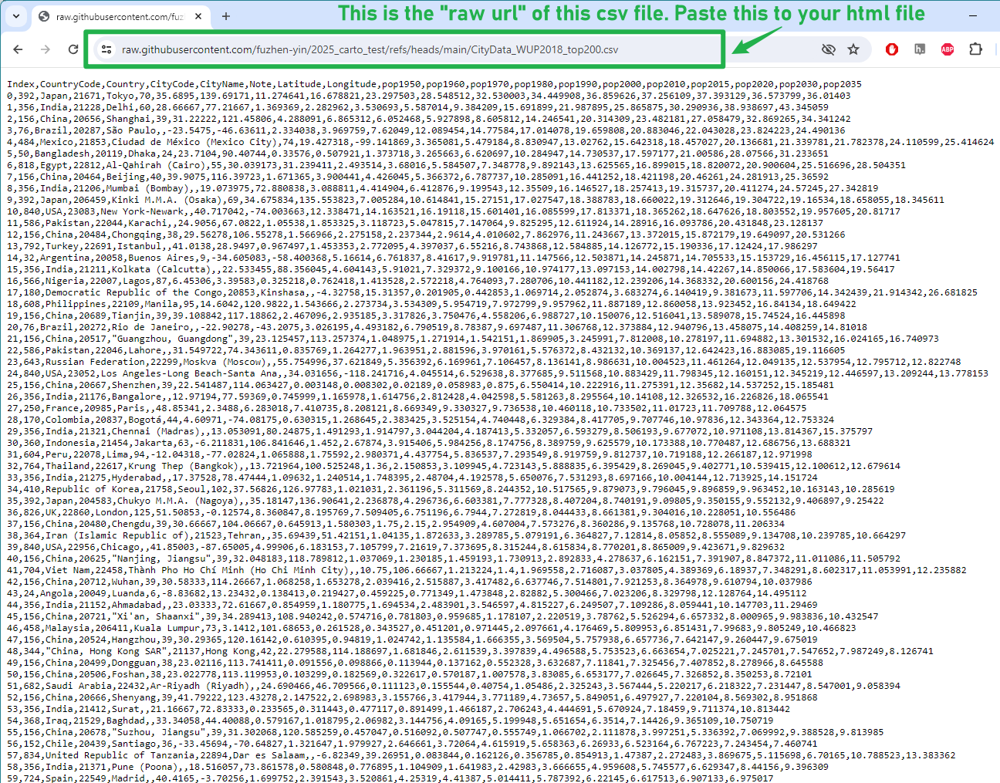
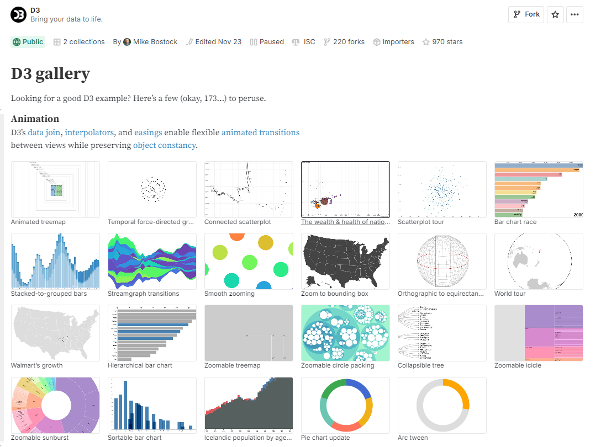
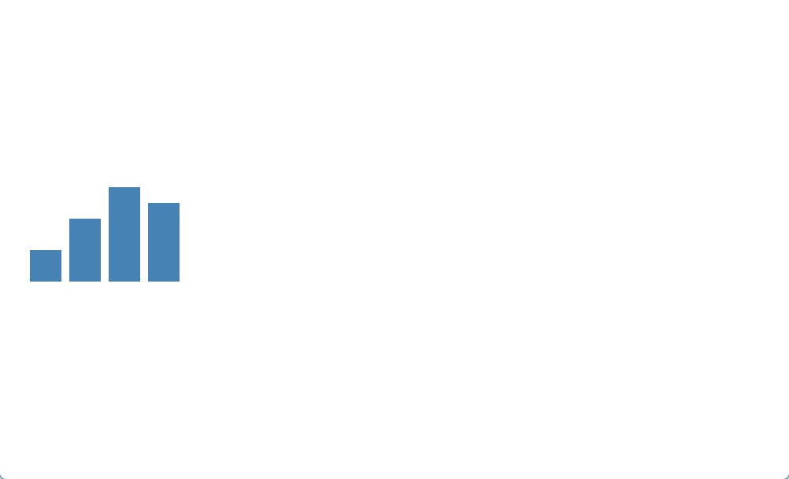
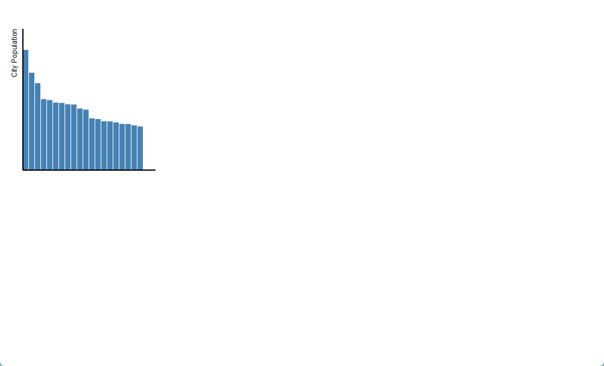
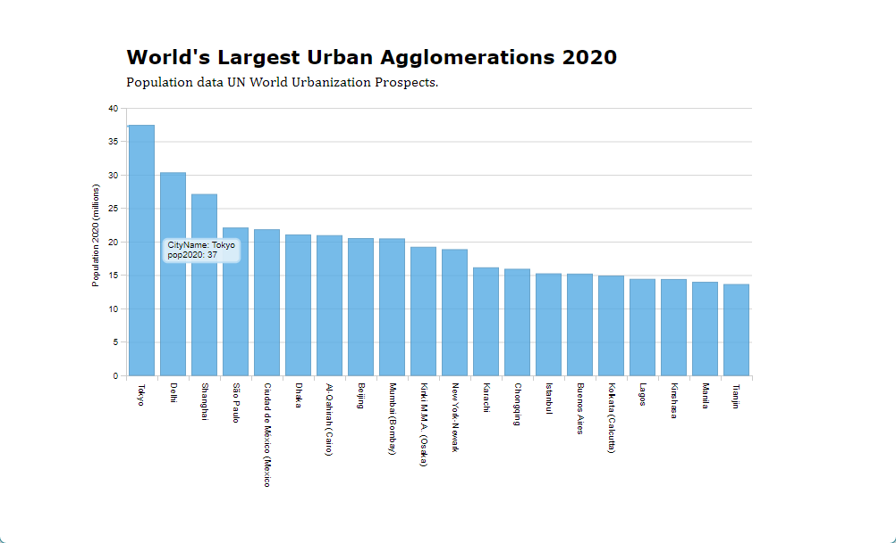

Lab 8: Interactive Charts
Overview
This lab introduces ways of creating online charts for data visualizations. Similar to previous labs, the examples are built upon each other with new features have been added in gradually. When replicate these examples, please compare carefully the differences between them:
- What are the new scripts/functions have been added?
- How they change the outcomes?
The zip file with Lab 8 materials can be found here: https://github.com/fuzhen-yin/uccs_cartography/blob/main/lab_materials/lab8.zip
(Don’t know how to download the data? Please read: Lab 4 - Overview)
Data
As with the online mapping examples in the previous labs, the data for online charts is generally loaded from an external source. Separating the data from the design is good practice, and improves the reusability of your code.
Data for online charts can be in the form of a CSV file or JSON (JavaScript Object Notation) file for archived data; or can involve requests to an API or web server for live data.
For this lab we are going to use data from CSV files (CityData_WUP2018.csv) by calling them via GitHub Raw URLs. This CityData is of the largest urban agglomerations in the world according to the United Nations World Urbanization Prospects 2018. There are three versions of this CSV included- all 2000 cities, the top 200 and the top 20. It corresponds to the three csv files in the lab’s folder:
- CityData_WUP2018_all.csv
- CityData_WUP2018_top20.csv
- CityData_WUP2018_top200.csv
To load CSV files using JavaScript, we need to upload them to GitHub and obtain its raw url for data sharing.
GitHub Raw URLs
First, let’s upload all the three .csv files to the GitHub repository. Navigate to the repository that you have created for this course.

Next, upload
files.

Drag the three .csv files to add
them to your repository and commit changes.

In the home of your repository, there are three .csv files just
uploaded. Click on a file to have a look at the data.
Click on “Raw” to get the raw url. 
The url highlighted is the link that can be used to load the data in
your html file. You can also use this link to share the data with
others.

Before Starts
This lab presents 8 examples of making charts. The first five using the D3 library, and the last three incorporates D3 with Dimple. The submission for this lab is pretty straightforward.
Submission
Similar to the lab 7, you still need to publish the required
webpages on GitHub, obtain the publicly accessible urls and submit the
urls using the ‘text entry’ on Canvas. Remember the process of
publishing the midterm project on GitHub? It’s the same process!
However, the GitHub page tutorial could be find here.
After playing with all 8 examples, please select ONE of your favorite
chart and redesign it a little bit. Don’t forget to replace the github
raw data url with your own data url as I will be removing the dataset
from my github shortly.
Submit the publicly accessible link to your redesigned chart, and briefly explain (100 words) whey you like this chart.
An introduction to D3
D3 (Data Driven Documents) is a popular library for web visualization created by the Programmer and Data Journalist Mike Bostock. It is based on the open web standards HTML, SVG and CSS, and offers powerful capabilities for binding data to web objects using the Document Object Model (DOM). There are a large number of both basic and advanced examples of different charts and visualizations created using D3 which can be viewed online- https://observablehq.com/@d3/gallery

More recently, D3 has also developed an editable notebooks version for easy sharing of templates called Observable. D3 is a powerful tool, though has quite a substantial learning curve. We will only cover the basics in this lab. If you want to develop your skills further, some useful tutorials can be found in the following locations:
- D3 API Reference: https://d3js.org/api
- D3 GitHub page: https://github.com/d3/d3?tab=readme-ov-file
- D3 Chart templates from the Financial Times: https://github.com/ft-interactive/visual-vocabulary?tab=readme-ov-file
Some Basic SVG Shapes
D3 - Example 1
The underlying standard for rendering graphics in D3 is SVG.
SVG uses the Document Object Model (DOM) just like HTML, and has a similar structure of tag elements.
Basic shape elements include <rect> for rectangles
and <circle> for circles. The example below creates
some basic rectangles that will underlie a bar chart. Note the
coordinates are defined from the top-left corner of the
SVG element.
<!DOCTYPE html>
<html lang="en">
<head>
<title>D3 Example 1- Core SVG Elements</title>
<!-- You will load the D3 library here. -->
</head>
<body>
<!-- Page elements and content go here. -->
<svg width="320" height="360">
<rect x="30" width="40" height="80" fill="steelblue"></rect>
<rect x="75" width="40" height="40" fill="steelblue"></rect>
<rect x="120" width="40" height="140" fill="steelblue"></rect>
<rect x="165" width="40" height="80" fill="steelblue"></rect>
</svg>
<script>
// Our D3 code will go here.
</script>
</body>
</html>
When you double click on the html file you have created, it should open in your default web browser software, and show a map as the image below.
Manipulating SVG Elements Using D3
D3 - Example 2
The first example hardcodes the SVG elements.
Hard coding is the software development practice of embedding data directly into the source code of a program or other executable object, as opposed to obtaining the data from external sources or generating it at runtime
In this next example, the height of the rectangles is defined in the D3 code.
- We create an array called
popDatawith the values for our bar chart. - The D3 script begins with a
d3.selectAll(“rect”)method. This selects all the rectangle elements and iterates through each element. - The
data()method is central to how d3 works, and here the.data(popData)line binds the data array to therectelements. - Next the
.attr( "height", function(d){ return d;});line changes the height value to the corresponding value in the popData array.
<!DOCTYPE html>
<html lang="en">
<head>
<title>D3 Example 2- Apply height of rectangles from array data</title>
<!-- Load the D3 library here -->
<script src="https://d3js.org/d3.v4.js" charset="utf-8"></script>
</head>
<body>
<!-- Page elements and content go here. -->
<svg width="320" height="360">
<rect x="30" width="40" fill="steelblue"></rect>
<rect x="75" width="40" fill="steelblue"></rect>
<rect x="120" width="40" fill="steelblue"></rect>
<rect x="165" width="40" fill="steelblue"></rect>
</svg>
<script>
// D3 code starts
var popData = [ 40, 80, 120, 100 ]; // Array with graph data
d3.selectAll( "rect" ) // select all rectangle elements
.data( popData )
.attr( "height", function(d){ // assign the data to the attribute height
return d;
});
</script>
</body>
</html>
When you double click on the html file you have created, it should open in your default web browser software, and show a map as the image below.
D3 - Example 3
It is more common to create the entire SVG html code in D3 and have no SVG elements hardcoded.
This can be seen in example 3. In this example we select the body element and append the SVG element in the D3 code. The next stage is a bit counter-intuitive, as we still select all the rectangle elements (if these do not exist, then D3 creates them) even though the rectangle elements have not been created in the HTML.
Example 3 also includes code to set the coordinates of the bars as a function based on the number of elements in the array, and to align the bars at the bottom of the chart, rather than at the top
<!DOCTYPE html>
<html lang="en">
<head>
<title>D3 Example 3- Basic Bar Chart</title>
<!-- Load the D3 library here -->
<script src="https://d3js.org/d3.v4.js" charset="utf-8"></script>
</head>
<body>
<script>
// Our D3 code will go here.
var popData = [ 40, 80, 120, 100 ]; // Data used for the bar chart
// Width and height of SVG
var w = 300;
var h = 350;
//Create SVG element
var svg = d3.select("body")
.append("svg")
.attr("width", w)
.attr("height", h);
// Select and generate rectangle elements
svg.selectAll( "rect" )
.data( popData )
.enter()
.append("rect")
.attr( "x", function(d,i){
return i*50 + 30; // Set x coordinate of rectangle to index of data value (i)*25.
// Add 30 to account for our left margin.
})
.attr( "y", function(d){
return h - d; // Set y coordinate for each bar to height minus the data value
})
.attr( "width", 40 )
.attr( "height", function(d){
return d; // Set height of rectangle to data value
})
.attr( "fill", "steelblue");
</script>
</body>
</html>
When you double click on the html file you have created, it should open in your default web browser software, and show a map as the image below.

Creating a Barchart from the CSV File
D3 - Example 4
In this example, we fill the popData array using the data from a CSV file by calling its raw data url (see the previous Section on how to obtain GitHub raw data url).
This d3.csv() method returns the CSV data as a JSON
array. We also define the position of the bars based on the length of
the data array. Finally, we add a basic x and y axis, and y axis
title.
<!DOCTYPE html>
<html lang="en">
<head>
<title>D3 Example 4- Bar Chart Data from CSV</title>
<script src="http://d3js.org/d3.v4.min.js" charset="utf-8"></script>
<style>
text {
font-family: "Open Sans", sans-serif;
font-size: 12px;
}
</style>
</head>
<body>
<!-- Location for page elements. -->
<script>
// Our D3 code will go here.
var popData = [];
// Paste here the github raw url of "CityData_WUP2018_top20.csv" data
d3.csv("https://raw.githubusercontent.com/fuzhen-yin/2025_carto_test/refs/heads/main/CityData_WUP2018_top20.csv", function(d) {
return {
CityName : d.CityName,
pop2020 : +d.pop2020 // the + sign forces the values to be a number
};
},
function(error, rows) {
popData = rows;
console.log(popData);
createVisualization();
});
function createVisualization(){
// Width and height of SVG
var w = 300;
var h = 350;
// Get length of Array and set length so we can an input dataset of variable length
var arrayLength = popData.length; // length of dataset or the number of rows
var maxValue = d3.max(popData, function(d) { return +d.pop2020;} ); // get maximum value of our dataset
var x_axisLength = 200; // length of x-axis in our layout
var y_axisLength = 200; // length of y-axis in our layout
// Use a scale for the height of the visualization
var yScale = d3.scaleLinear()
.domain([0, maxValue])
.range([0, y_axisLength]);
//Create SVG element
var svg = d3.select("body")
.append("svg")
.attr("width", w)
.attr("height", h);
// Select and generate rectangle elements
svg.selectAll( "rect" )
.data( popData )
.enter()
.append("rect")
.attr( "x", function(d,i){
return i * (x_axisLength/arrayLength) + 30; // Set x coordinate of rectangle to index of data value (i) *25
})
.attr( "y", function(d){
return h - yScale(d.pop2020) - 75; // Set y coordinate of rect using the y scale
})
.attr( "width", (x_axisLength/arrayLength) - 1)
.attr( "height", function(d){
return yScale(d.pop2020); // Set height of using the scale
})
.attr( "fill", "steelblue");
// Create y-axis
svg.append("line")
.attr("x1", 30)
.attr("y1", 40)
.attr("x2", 30)
.attr("y2", 275)
.attr("stroke-width", 2)
.attr("stroke", "black");
// Create x-axis
svg.append("line")
.attr("x1", 30)
.attr("y1", 275)
.attr("x2", 250)
.attr("y2", 275)
.attr("stroke-width", 2)
.attr("stroke", "black");
// y-axis label
svg.append("text")
.attr("class", "y label")
.attr("text-anchor", "end")
.text("City Population")
.attr("transform", "translate(20, 40) rotate(-90)")
.attr("font-size", "14")
.attr("font-family", "'Open Sans', sans-serif");
};
</script>
</body>
</html>
When you double click on the html file you have created, it should open in your default web browser software, and show a map as the image below.

This example shows that D3 can be rather time consuming to achieve basic charts.
When you are only creating basic line charts and bar charts then it is probably easier to use chart libraries such as Dimple.js and Plot.ly that speed up the process and reduce the length of code required.
D3 is more advantageous when you are looking to develop more sophisticated charts.
An example has been included of a bubble chart using the force packing algorithm built into D3 in example 5.
D3 - Example 5
This example is based on the template provided here: https://www.d3-graph-gallery.com/circularpacking.html
The template has been changed to use the city population data used in this lab. There are a number of ways this example could be improved on, such as clustering groups of cities by countries, and adjusting how the population variable corresponds to the circle size (at the moment it directly relates to radius, which is arguably misleading for the viewer, as it exaggerates differences between cities).
<html>
<head>
<style>
.node circle {
stroke: #3a403d;
stroke-width: .5px;
}
.node circle:hover{
stroke-width: 3px !important;
opacity: 1 !important;
}
#header {
margin: auto;
width: 50%;
}
h1 {
margin: auto;
padding: 10px 0 0 0;
font: bold 25px Verdana;
}
h2 {
margin: 5px 15px 10px 20px;
padding: 0;
font: bold 16px Verdana;
}
p {
margin: 0 15px 15px 20px;
padding: 0;
}
</style>
</head>
<body>
<div id="header">
<h1>D3 Bubble Chart with Force Packing- Top 200 Population Cities in 2020</h1>
<p>Based on template example by <a href="https://www.d3-graph-gallery.com/circularpacking.html">D3 Graph Gallery</a>.</p>
</div>
<div id="my_dataviz"></div>
<script src="https://d3js.org/d3.v4.min.js"></script>
<script>
var width = window.innerWidth, height = window.innerHeight, sizeDivisor = 100, nodePadding = 2.5;
var svg = d3.select("#my_dataviz")
.append("svg")
.attr("width", width)
.attr("height", height);
var color = d3.scaleOrdinal(d3.schemeCategory20);
var simulation = d3.forceSimulation()
.force("forceX", d3.forceX().strength(.1).x(width * .5))
.force("forceY", d3.forceY().strength(.1).y(height * .5))
.force("center", d3.forceCenter().x(width * .5).y(height * .5))
.force("charge", d3.forceManyBody().strength(-15));
// Paste here the github raw url of "CityData_WUP2018_top200.csv" data
d3.csv("https://raw.githubusercontent.com/fuzhen-yin/2025_carto_test/refs/heads/main/CityData_WUP2018_top200.csv", types, function(error,graph){
if (error) throw error;
// sort the nodes so that the bigger ones are at the back
graph = graph.sort(function(a,b){ return b.size - a.size; });
// create a tooltip
var Tooltip = d3.select("#my_dataviz")
.append("div")
.style("opacity", 0)
.attr("class", "tooltip")
.style("background-color", "white")
.style("border", "solid")
.style("border-width", "2px")
.style("border-radius", "5px")
.style("padding", "5px")
.style("position", "absolute")
// Three function that change the tooltip when user hover / move / leave a cell
var mouseover = function(d) {
//console.log("Mouseover")
Tooltip
.style("opacity", 1)
}
var mousemove = function(d) {
//console.log("Mousemove")
Tooltip
.html("<h2>" + d.CityName + ", " + d.Country + "</h2>" + "<p>" + d3.format(".1f")(d.pop2020) + "m population" + "</p>")
.style("left", (d3.mouse(this)[0]+40) + "px")
.style("top", (d3.mouse(this)[1]+40) + "px")
}
var mouseleave = function(d) {
Tooltip
.style("opacity", 0)
}
//update the simulation based on the data
simulation
.nodes(graph)
.force("collide", d3.forceCollide().strength(.5).radius(function(d){ return d.radius + nodePadding; }).iterations(1))
.on("tick", function(d){
node
.attr("cx", function(d){ return d.x; })
.attr("cy", function(d){ return d.y; })
});
var node = svg.append("g")
.attr("class", "node")
.selectAll("circle")
.data(graph)
.enter().append("circle")
.attr("r", function(d) { return d.radius; })
.attr("fill", function(d) { return color(d.Country); })
.attr("cx", function(d){ return d.x; })
.attr("cy", function(d){ return d.y; })
.on("mouseover", mouseover) // What to do when hovered
.on("mousemove", mousemove)
.on("mouseleave", mouseleave)
.call(d3.drag()
.on("start", dragstarted)
.on("drag", dragged)
.on("end", dragended));
});
function dragstarted(d) {
if (!d3.event.active) simulation.alphaTarget(.03).restart();
d.fx = d.x;
d.fy = d.y;
}
function dragged(d) {
d.fx = d3.event.x;
d.fy = d3.event.y;
}
function dragended(d) {
if (!d3.event.active) simulation.alphaTarget(.03);
d.fx = null;
d.fy = null;
}
function types(d){
d.pop2020 = +d.pop2020;
d.size = +d.pop2020*2;
//d.radius = Math.sqrt(d.size/3.14); //Use this to size circles in proportion to area
d.radius = d.size;
return d;
}
</script>
</body>
</html>
When you double click on the html file you have created, it should open in your default web browser software, and show a map as the image below.
Creating a Bar Chart in Dimple.js
Dimple.js(http://dimplejs.org/examples_index.html) is a JavaScript charting library built on D3. It offers a series of standard chart types with relatively minimal coding required.
Dimple - Barchart 1
Our first example is a Dimple bar chart. This example uses the CityData_WUP2018_top20.csv to plot the population in the top 20 largest urban agglomerations according to the UN.
We need to add the Dimple.js library and the
D3.js library in the header in this
example. The CSV data is loaded using the d3.csv method by
calling the github raw data url.
D3 offers a series of methods for loading standard data types such as CSV and JSON files over HTTP.
This is another example of an Asynchronous JavaScript (AJAX) approach
where the function to draw the chart is run after the CSV file has been
loaded (you cannot draw the chart before the data is loaded). The CSV
data is loaded as the variable CityData, which is an
array of JSON objects.
JSON (JavaScript Object Notation) is a standard way of storing data in JavaScript based on name and value pairs- {“name”: “value”}.
Dimple, like D3, is based on a web standard for vector graphics
called SVG (Scalable Vector Graphics). An SVG variable
is created, with the width and height for the chart. Then the
myChart variable is created using the svg variable and the
CityData variable as arguments. We then create the
x and y axes, using the column names from the
CSV file.
The addseries statement is used to define the chart
type: dimple.plot.bar. Finally, the chart is plotted using
myChart.draw(500);.
The argument here is a delay in milliseconds used for an animation effect. This can be used for transitions between different data series in more advanced examples.
<!DOCTYPE html>
<html>
<head>
<title>World City Populations Chart 2020</title>
<meta name="viewport" content="initial-scale=1.0, user-scalable=no" />
<!--Load the chart libraries. Dimple is built on D3, and you need to also add D3-->
<script charset="utf-8" src="https://d3js.org/d3.v4.min.js"></script>
<script charset="utf-8" src="https://cdnjs.cloudflare.com/ajax/libs/dimple/2.3.0/dimple.latest.min.js"></script>
<style>
#chartContainer {width: 840px; margin: auto; margin-top: 50px; }
#chartContainer p {margin-left: 60px; margin-bottom: 5px; margin-top: 0; padding: 0;}
#charttitle {font: bold 22px Verdana, sans-serif;}
</style>
</head>
<body>
<!--This is the div container for the chart-->
<div id="chartContainer">
<p id="charttitle">World's Largest Urban Agglomerations 2020</p>
<p id="chartsubhead">Population data UN World Urbanization Prospects.</p>
</div>
<script>
//The following statement loads the data from the CSV file, and then runs the function after the CSV is loaded. CityData is returned as an array containing the CSV data
// Paste here the github raw url of "CityData_WUP2018_top20.csv" data
d3.csv("https://raw.githubusercontent.com/fuzhen-yin/2025_carto_test/refs/heads/main/CityData_WUP2018_top20.csv", function(CityData) {
console.log(CityData[1]);
var svg = dimple.newSvg("#chartContainer", 840, 440); // The chart is an svg variable assigned to the chartcontainer div. It's width and height are also assigned here
var myChart = new dimple.chart(svg, CityData); // Create the chart with CityData as the data input
myChart.setBounds(60, 15, 700, 300); // Set the chart bounds within the svg container, top-left and bottom-right coords measured from top left
myChart.defaultColors = [
new dimple.color("#54aae3")
];
var x = myChart.addCategoryAxis("x", "CityName"); // Define the x axis. In this example it is a category axis
var y = myChart.addMeasureAxis("y", "pop2020"); // Define the y axis
y.title = "Population 2020 (millions)";
var s = myChart.addSeries(null, dimple.plot.bar); // Plot a bar chart of the data
myChart.draw(500); // Draw the chart. The number is the animation delay in miliseconds
svg.selectAll("path.domain").style("stroke", "#CCC"); // These statements change the chart gridlines to a lighter grey colour
svg.selectAll("g.tick line").style("stroke", "#CCC");
});
</script>
</body>
</html>
When you double click on the html file you have created, it should open in your default web browser software, and show a map as the image below.

Dimple - Barchart 2
The second Dimple example shows a line chart example using the same library. This time the line chart shows the change in population for a single city.
Dimple requires time series data to be formatted as a separate row
for each time point. So in this example, we create a new
chartdata JavaScript Object Notation (JSON) array that is
populated using the original CityData array. Each row is a
different decade in the time-series.
<!DOCTYPE html>
<html>
<head>
<title>World City Populations Chart 1950-2035</title>
<meta name="viewport" content="initial-scale=1.0, user-scalable=no" />
<!--Load the chart libraries. Dimple is built on D3, and you need to also add D3-->
<script charset="utf-8" src="https://d3js.org/d3.v4.min.js"></script>
<script charset="utf-8" src="https://cdnjs.cloudflare.com/ajax/libs/dimple/2.3.0/dimple.latest.min.js"></script>
<style>
#chartContainer {width: 840px; margin: auto; margin-top: 50px; }
#chartContainer p {margin-left: 60px; margin-bottom: 5px; margin-top: 0; padding: 0;}
#charttitle {font: bold 22px Verdana, sans-serif;}
</style>
</head>
<body>
<!--This is the div container for the chart-->
<div id="chartContainer">
<p id="charttitle">Chart title is here</p>
<p id="chartsubhead">Population 1950-2035. Data UN World Urbanization Prospects.</p>
</div>
<script>
//This statement loads the data from the CSV file hosted on GitHub, and then runs the function after the CSV is loaded. CityData is an array that contains the CSV data
// Paste here the github raw url of "CityData_WUP2018_top200.csv" data
d3.csv("https://raw.githubusercontent.com/fuzhen-yin/2025_carto_test/refs/heads/main/CityData_WUP2018_top200.csv", function(CityData) {
var CityDataIndex = 0; // Here we select which row of the csv data is going to be loaded. Change the number to change which city is shown in the chart
console.log(CityData[0]); // Show the data of the row in the console
document.getElementById("charttitle").innerHTML = CityData[CityDataIndex].CityName + ", " + CityData[CityDataIndex].Country; // The name of the city and country is inserted into the chart title
var svg = dimple.newSvg("#chartContainer", 840, 440); // The chart is an svg variable assigned to the chartcontainer div. It's width and height are also assigned here
// Dimple requires each data point on a time series to be a separate row. Below we insert the population data from the CityData array into a new array of JSON objects in the required format
var chartdata = [
{ "City":"Hist","Year":"1950","Population":(CityData[CityDataIndex].pop1950*1000000) },
{ "City":"Hist","Year":"1960","Population":(CityData[CityDataIndex].pop1960*1000000) },
{ "City":"Hist","Year":"1970","Population":(CityData[CityDataIndex].pop1970*1000000) },
{ "City":"Hist","Year":"1980","Population":(CityData[CityDataIndex].pop1980*1000000) },
{ "City":"Hist","Year":"1990","Population":(CityData[CityDataIndex].pop1990*1000000) },
{ "City":"Hist","Year":"2000","Population":(CityData[CityDataIndex].pop2000*1000000) },
{ "City":"Hist","Year":"2010","Population":(CityData[CityDataIndex].pop2010*1000000)},
{ "City":"Hist","Year":"2015","Population":(CityData[CityDataIndex].pop2015*1000000) },
{ "City":"Proj","Year":"2015","Population":(CityData[CityDataIndex].pop2015*1000000) },
{ "City":"Proj","Year":"2020","Population":(CityData[CityDataIndex].pop2020*1000000) },
{ "City":"Proj","Year":"2030","Population":(CityData[CityDataIndex].pop2030*1000000) },
{ "City":"Proj","Year":"2035","Population":(CityData[CityDataIndex].pop2035*1000000) }
];
var myChart = new dimple.chart(svg, chartdata); // Create the chart
myChart.setBounds(60, 15, 700, 300); // Set the chart bounds within the svg container
myChart.defaultColors = [
new dimple.color("#54aae3"),
new dimple.color("#54aae3")
];
var x = myChart.addTimeAxis("x", "Year", "%Y", "%Y"); // Define the x axis. The latter statements define the date format which we want to be year only
x.timeInterval = 10;
var y = myChart.addMeasureAxis("y", "Population"); // Define the y axis
y.ticks = 6;
var s = myChart.addSeries("City", dimple.plot.line);
s.lineMarkers = true;
s.interpolation = "cardinal";
myChart.draw(500); // Draw the chart. The number is the animation delay in miliseconds
svg.selectAll("path.dimple-proj").style("stroke-dasharray", "2"); // Some minor stying changes using the svg selectAll statement. Make the projected data a dashed line and the grid colour lighter.
svg.selectAll("path.domain").style("stroke", "#CCC");
svg.selectAll("g.tick line").style("stroke", "#CCC");
});
</script>
</body>
</html>
When you double click on the html file you have created, it should open in your default web browser software, and show a map as the image below.
Dimple - Barchart 3
The final example adds the ability for users to change which city is plotted in the line chart example, using an HTML dropdown menu (select element) and an event listener.
<!DOCTYPE html>
<html>
<head>
<title>World City Populations Chart 1950-2035</title>
<meta name="viewport" content="initial-scale=1.0, user-scalable=no" />
<!--Load the chart libraries. Dimple is built on D3, and you need to also add D3-->
<script charset="utf-8" src="https://d3js.org/d3.v4.min.js"></script>
<script charset="utf-8" src="https://cdnjs.cloudflare.com/ajax/libs/dimple/2.3.0/dimple.latest.min.js"></script>
<style>
#chartContainer {width: 840px; margin: auto; margin-top: 50px; }
#chartContainer p {margin-left: 60px; margin-bottom: 5px; margin-top: 0; padding: 0;}
#charttitle {font: bold 22px Verdana, sans-serif;}
</style>
</head>
<body>
<!--This is the div container for the chart-->
<div id="chartContainer">
<p id="charttitle">Chart title is here</p>
<p id="chartsubhead">Population 1950-2035. Data UN World Urbanization Prospects.</p>
<p><select id="CityMenu"><option>Change City Here:</option></select></p>
</div>
<script>
//This statement loads the data from the CSV file, and then runs the function after the CSV is loaded. CityData is an array that contains the CSV data
// Paste here the github raw url of "CityData_WUP2018_top200.csv" data
d3.csv("https://raw.githubusercontent.com/fuzhen-yin/2025_carto_test/refs/heads/main/CityData_WUP2018_top200.csv", function(CityData) {
var select = document.getElementById("CityMenu");
var chartdata;
for(var i = 0; i < CityData.length; i++) {
var el = document.createElement("option");
el.textContent = CityData[i].CityName + ", " + CityData[i].Country;
el.value = CityData[i].Index;
select.appendChild(el);
}
function SetCityData(index) {
console.log(CityData[index]); // Show the data of the row in the console
document.getElementById("charttitle").innerHTML = CityData[index].CityName + ", " + CityData[index].Country; // The name of the city and country is inserted into the chart title
// Dimple requires each data point on a time series to be a separate row. Below we insert the population data from the CityData array into a new array of JSON objects in the required format
chartdata = [
{ "City":"Hist","Year":"1950","Population":(CityData[index].pop1950*1000000) },
{ "City":"Hist","Year":"1960","Population":(CityData[index].pop1960*1000000) },
{ "City":"Hist","Year":"1970","Population":(CityData[index].pop1970*1000000) },
{ "City":"Hist","Year":"1980","Population":(CityData[index].pop1980*1000000) },
{ "City":"Hist","Year":"1990","Population":(CityData[index].pop1990*1000000) },
{ "City":"Hist","Year":"2000","Population":(CityData[index].pop2000*1000000) },
{ "City":"Hist","Year":"2010","Population":(CityData[index].pop2010*1000000)},
{ "City":"Hist","Year":"2015","Population":(CityData[index].pop2015*1000000) },
{ "City":"Proj","Year":"2015","Population":(CityData[index].pop2015*1000000) },
{ "City":"Proj","Year":"2020","Population":(CityData[index].pop2020*1000000) },
{ "City":"Proj","Year":"2030","Population":(CityData[index].pop2030*1000000) },
{ "City":"Proj","Year":"2035","Population":(CityData[index].pop2035*1000000) }
];
}
SetCityData(0);
var svg = dimple.newSvg("#chartContainer", 840, 440); // The chart is an svg variable assigned to the chartcontainer div. It's width and height are also assigned here
var myChart = new dimple.chart(svg, chartdata); // Create the chart
myChart.setBounds(60, 15, 700, 300); // Set the chart bounds within the svg container
myChart.defaultColors = [
new dimple.color("#54aae3"),
new dimple.color("#54aae3")
];
var x = myChart.addTimeAxis("x", "Year", "%Y", "%Y"); // Define the x axis. The latter statements define the date format which we want to be year only
x.timeInterval = 10;
var y = myChart.addMeasureAxis("y", "Population"); // Define the y axis
y.ticks = 6;
var s = myChart.addSeries("City", dimple.plot.line);
s.lineMarkers = true;
s.interpolation = "cardinal";
myChart.draw(500); // Draw the chart. The number is the animation delay in miliseconds
svg.selectAll("path.dimple-proj").style("stroke-dasharray", "2"); // Some minor stying changes using the svg selectAll statement. Make the projected data a dashed line and the grid colour lighter.
svg.selectAll("path.domain").style("stroke", "#CCC");
svg.selectAll("g.tick line").style("stroke", "#CCC");
document.getElementById("CityMenu").onchange = function() {
var x = document.getElementById("CityMenu").value;
console.log(x);
SetCityData(x);
svg.selectAll(".dimple-marker,.dimple-marker-back").remove();
myChart.data = chartdata;
myChart.draw(500);
}
});
</script>
</body>
</html>
When you double click on the html file you have created, it should open in your default web browser software, and show a map as the image below.